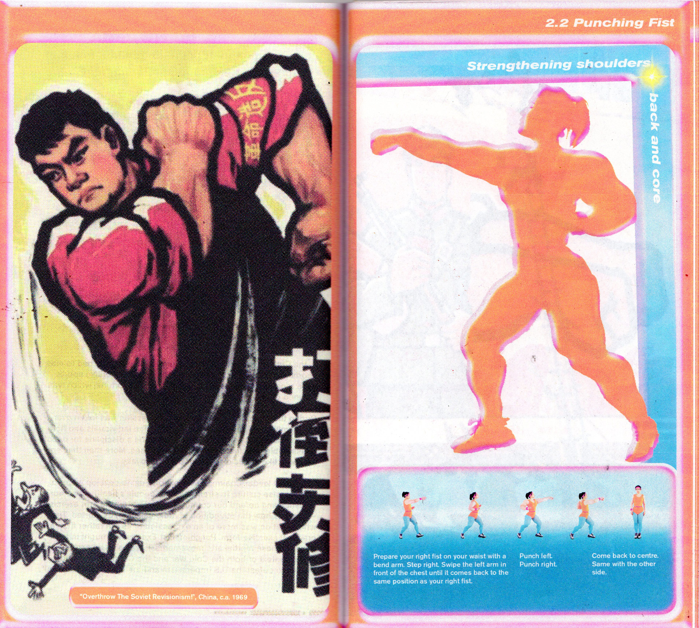
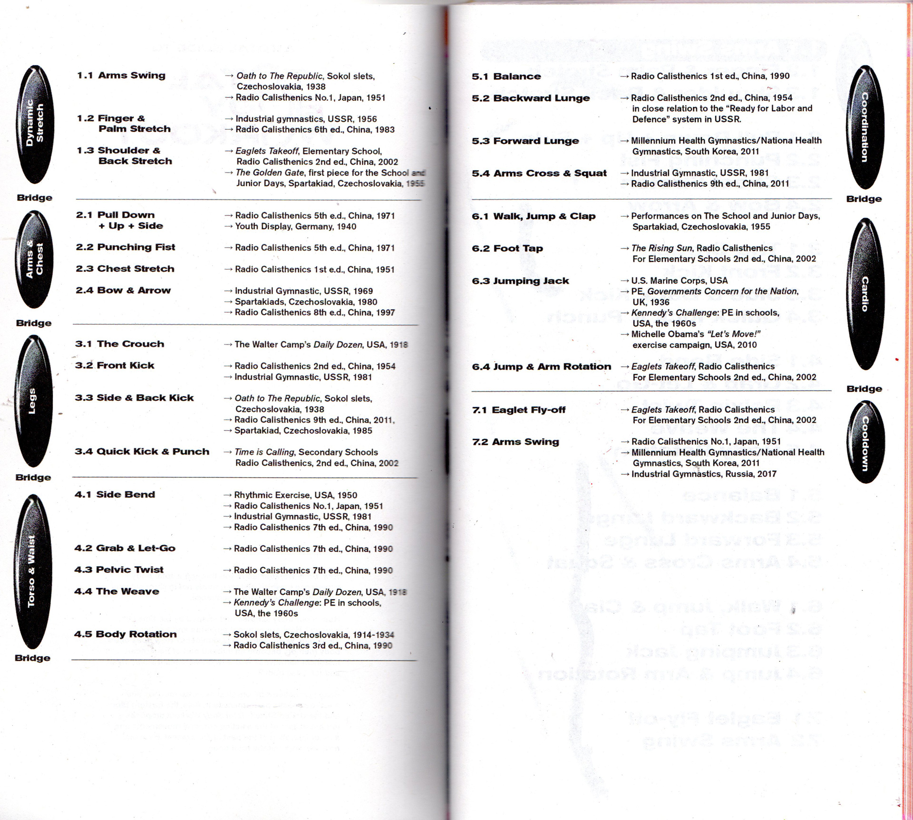
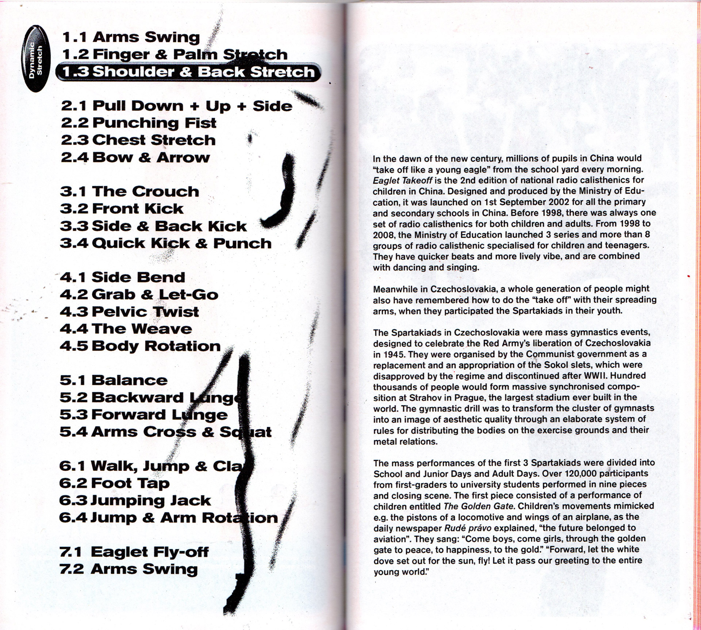
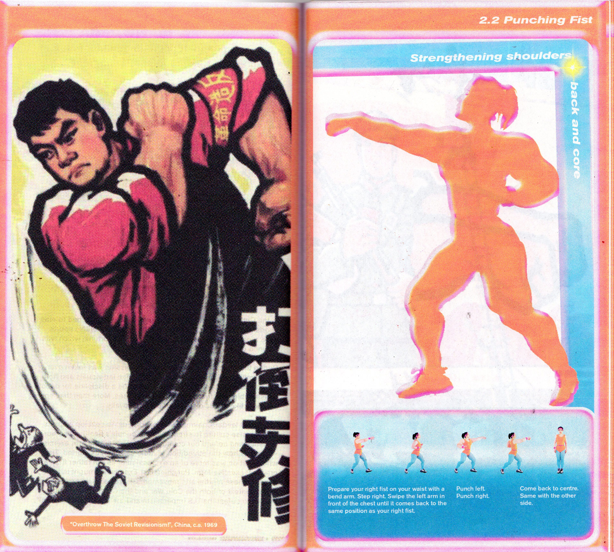
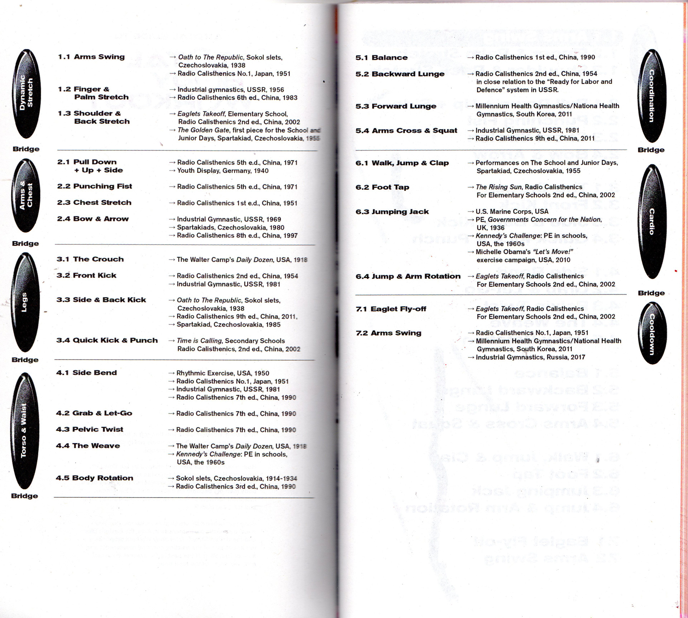
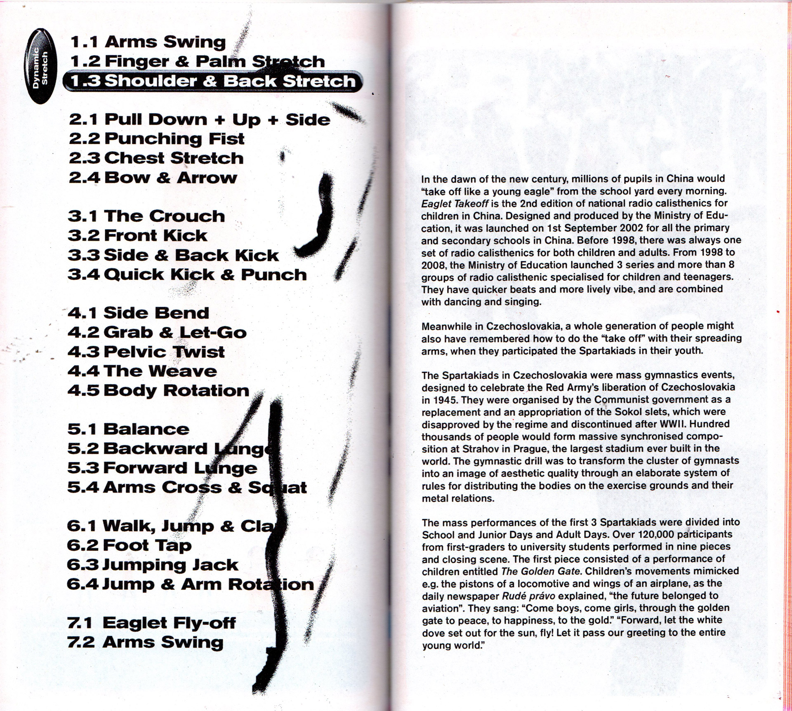

Total Body Workout
How is our body scripted and shaped by the times it lives in? How are national agendas and political ideologies woven into bodily semiotics? How does one’s body memory become an integral part of hegemonic historical narratives? And how do we inhabit a historical and totalised body?
Based on nationwide physical exercise routines and mass gymnastic performances in Asia, the Eastern Bloc and the United States, Total Body Workout proposes a recomposition of the existing corporal movements and a reconfiguration of the past in the present. Here and now, we work out the total body.
Graduation work | Royal Academy of Art, The Hague | 2021
Nomination iii Research Residency Award
Winner BA Graphic Design Department Award 2021
Tutors: Ruben Pater × Thomas Buxo
Photography & cinematography: Helena Roig × Pedro Gossler
Music: Dima Ibrahim
Make up: Mijs Goosen
Fitness supervisor: Leon Lapa Pereira
Performers: Leon Lapa Pereira × Ella Wang Olsson × Tom Šebestík × Tingyi Jiang
Exhibition design: Luā Su-íng × Arthur Cordier

 




